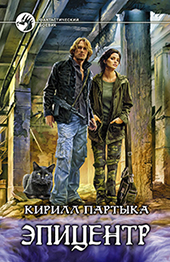

Эпицентр
- Жанр: Фантастический роман
- Аннотация:
…Ему выпало жить в земном аду, в зачумлённой Зоне, где большинство людей вымерло от неведомого недуга, а животные и растения превратились в монстров. Он был офицером-разведчиком. Но избыток опасностей и ненависти внутри изолированного периметра сделал из него волка-одиночку по кличке Серый. У него почти нет друзей, но слишком много врагов. Чтобы выжить, он вынужден вести двойную игру, провоцировать кровавые схватки, сражаться с людьми и исчадиями взбесившейся природы.
Он сам не заметил, как Зона связала его таинственной нитью с Эпицентром, из которого распространилось бедствие.
Серый – ключ к разгадке зловещих тайн как внутри Зоны, так и за её пределами.
…Роман «Эпицентр» продолжает лучшие традиции мастеров захватывающей фантастики.